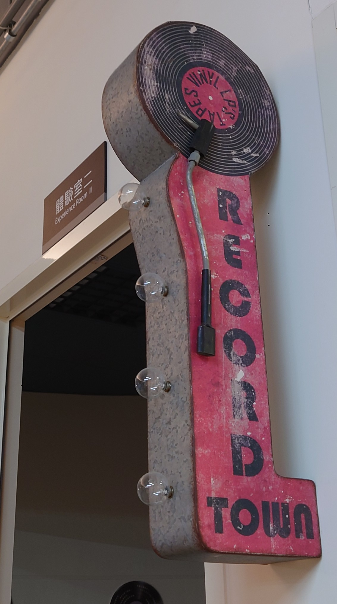
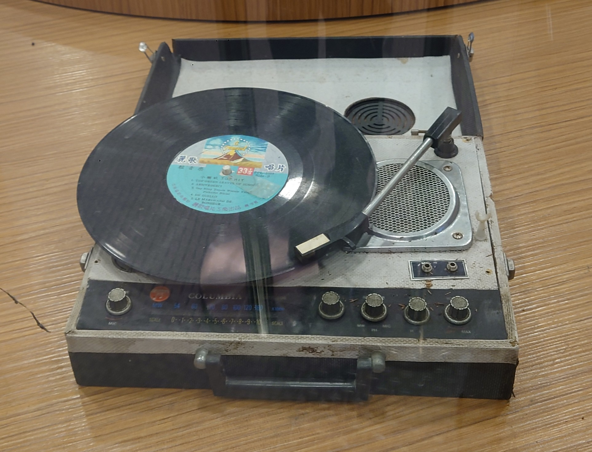
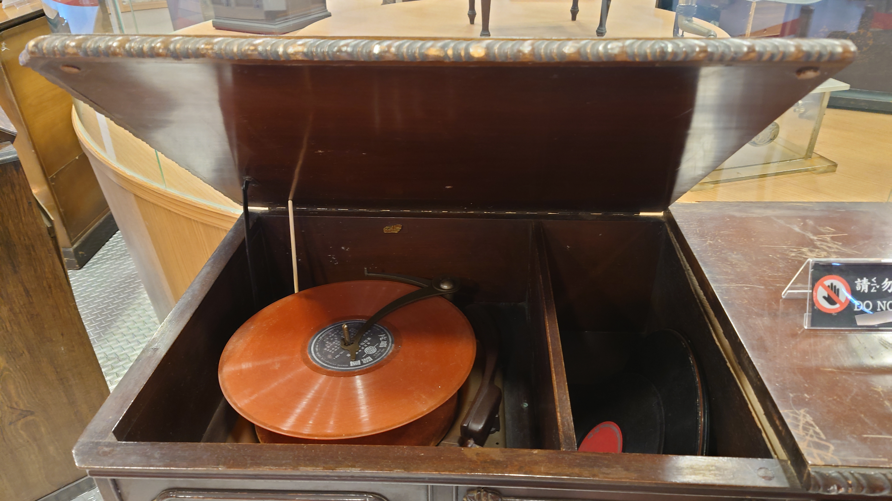
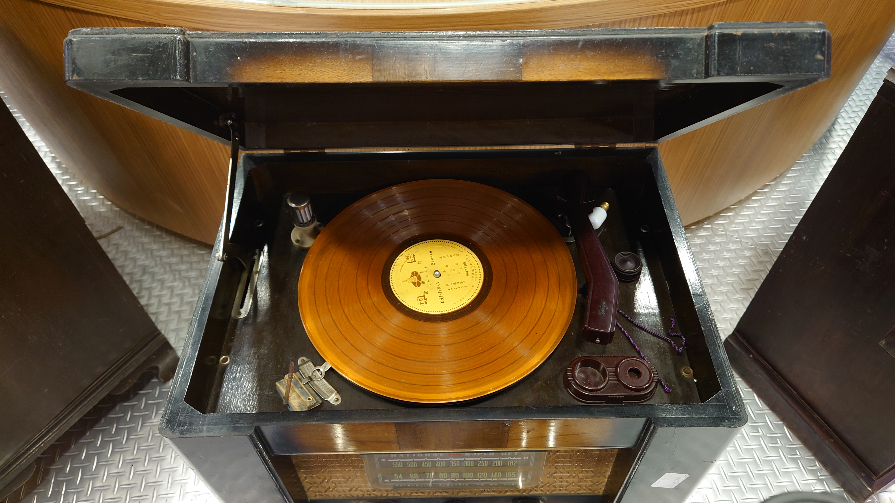
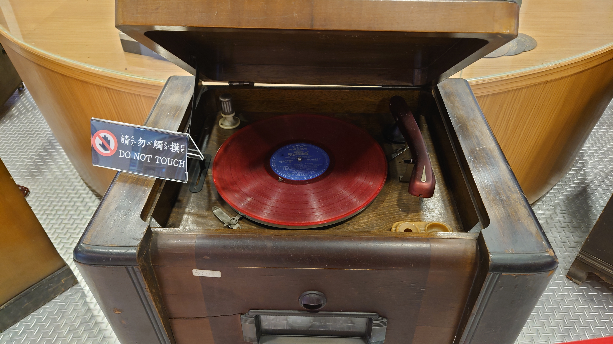
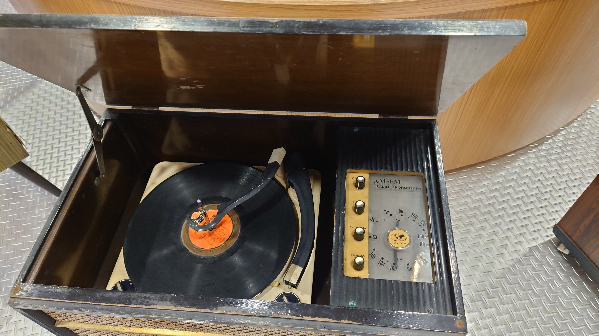

黑膠續弦在地文史
黑膠唱片的起源
 人類最早通用的音樂載體是滾筒型的「錄音筒」（Phonograph cylinder），黑膠唱的起源地是美國，時間是1887年，發明家是在德國出生的發明家貝利納，研發出盤狀的唱片，用環狀刻盤、製成版模，使採錄的音軌得以複製、量產，這樣的成品稱之為「唱片」。 早期的黑膠唱片只有單聲道而且一開始一張唱片只能錄製一首大約3分鐘的歌曲，隨著時間的移動，黑膠唱片才開始可以錄製6首歌左右；另一方面，原來的45轉唱片也由於生產技術的改進，使原來每一面只能錄製一首歌，變為可以錄製兩首歌，這種唱片被稱為EP 雖然錄音筒沒辦法複製，但因為可自行錄音，且較為耐用、速度穩定，相關產業仍持續發展，但是在1910年前後，全球性音樂市場逐漸成形，10吋、中間有圓標（又稱為「唱片芯」）、以蟲膠為主要材質，兩面、音軌由外往內、規格每分鐘78轉的黑色盤狀唱片，乃成為音樂市場的主流，於是可以專稱為「蟲膠（Shellac）唱片」或「78轉唱片」。
關於唱片的轉速：
黑膠唱片有三種轉速
-
78 rpm:
一分鐘 78 轉的高轉速唱片，又稱「Standard-playing」(SP) 。早期因黑膠唱片製作技術的限制，高轉速的唱片能輸出的音樂時間十分有限，一般來說只能播放一首五分鐘的曲子。現在除了二手唱片，幾乎不會在市面上看到這種唱片了。又因為早期製作使用的材質「蟲膠」相當易碎，因此損壞的情形相當常見，保存相當不易，又稱「蟲膠唱片」
-
33⅓ rpm:
而後發展出的 33⅓轉的唱片釋出，因可以容納 30 分鐘左右因此被稱為「Long-Playing」(LP)。由於能錄製的時間剛長，換唱片的次數降低，因此也大大降低了聽黑膠唱片的成本。而現在興起的黑膠唱片，以及流行歌手所釋出的黑膠唱片版也都是以這種 LP 密紋唱片去錄製而成，正反兩面錄製總共可以錄製十多首。
-
45 rpm:
而 45 轉的唱片在當時常被用於流行歌曲的錄製，背當時的製造商定義為「Extended Playing」(EP)。理論上 45 轉的唱片因為能比 33 轉的唱片容納更多的音訊，因此音質會更好。但以現在的錄音技術來說，其實只要錄音的過程品質良好，其實 33 轉與 45 轉的唱片是沒有差別的。
流行的年代
RCA Victor
1930年，RCA Victor出產了第一批用作商業用途的黑膠唱片。黑膠唱片有著12公分的半徑，且有每分鐘33轉的回放。黑膠唱片在那時還不是很流行，主要原因還是播放黑膠唱片的機器太過貴了。 黑膠唱片是1980年代以前，最主流的實體專輯形式。
哥倫比亞唱片
在二戰期間，蟲膠變得稀有，唱片公司開始大量用黑膠生產唱片。最常見的產品是12英寸唱片，每一面能放6分鐘，每分鐘78轉，這些只能短時間播放的唱片被海運到部隊裡去，為士兵們提供流行音樂。
細碟
作為對哥倫比亞進軍黑膠市場的回應，RCA Victor出產了一種新的短時間播放格式，7英寸的細碟(EP)。這些袖珍的唱片每分鐘能放45轉，它們是長單曲的最佳載體。至於LP就成為專輯唱片的標準格式，因為它們每一面能夠放30分鐘的音樂。
聲音革新
1957年，立體聲錄音開始應用在LP上；1968年，傳統的單聲道錄音正式謝幕。單聲道錄音只依靠一條聲道在擴音器里儲存聲音。在1970年代，唱片工業發行四聲道錄製的黑膠唱片，嘗試與當時流行的四聲道和八軌磁帶競爭。四聲道錄製利用了四條聲道去記錄、並把聲音向聽眾周圍的四個角落回放。儘管四聲道的黑膠能提供聽覺享受，但這些唱片本身沒有享受到商業上的成功，因為唱片有三種不同的格式，並且只能在各自的唱片機上播放。
沒落與接替者
1980年代的CD唱片大幅度地降低黑膠的受歡迎程度。相比起CD，黑膠並沒有那麼高保真的音質，而且也很容易受損。設備受到一點震動，就可能會引起跳針，從而損害到黑膠唱片表面精細的螺旋槽。 黑膠唱片原本是1980年代以前，最主流的實體專輯形式，然而到了1984年，黑膠唱片的地位先是被卡帶給取代，到了1991年以後又被CD所取代。 CD在2000年時達到銷售高峰，年度的銷售額達到132億美元，市佔率更是高達92%。 相比之下，黑膠唱片同一年的銷售額只有6000萬美元 
黑膠唱片的現況
現在黑膠唱片的用途機乎都不是拿來聽歌，反而是拿來收藏、宣傳、記念，有些人的興趣就是收藏黑膠唱片，歌手有時候會在推出新歌曲時順便推出有錄製新歌曲的黑膠唱片來達到宣傳和行銷的效果，有一些在
黑膠的保存方法
- 放置唱片的場所需通風並且乾燥，以防止發霉。可以在儲藏櫃內放入恒溫計和及恒濕計，將溫度與濕度分別控制在25℃及45℃。
- 收藏時請直立並壓緊放置，以防止變形。
- 發霉或髒污的唱片，必須要清理乾淨才可播放。